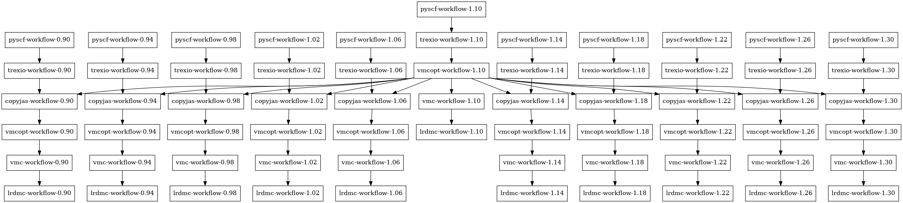
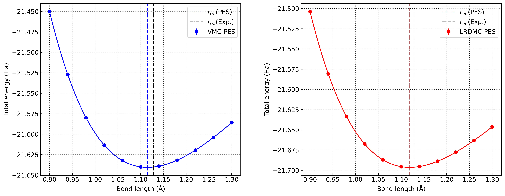

CO Molecule Calculation
Overview
This tutorial explains the workflow for Quantum Monte Carlo (QMC) calculations using TurboWorkflows, using co_dimer as an example.
This tutorial performs QMC calculations for CO molecule (carbon monoxide) at multiple interatomic distances to compute the energy curve.
This tutorial performs QMC calculations for CO molecule through the following steps:
PySCF Calculation: Generate initial wavefunctions using DFT calculations for multiple CO distances
TREXIO Conversion: Convert PySCF results from TREXIO format to TurboRVB format
Jastrow Factor Copying: Copy optimized Jastrow factors from the reference distance to other distances (for efficiency)
VMC Optimization: Optimize Jastrow factors
VMC Calculation: Perform VMC calculation with optimized wavefunction
LRDMC Calculation: Perform LRDMC calculation
Purpose of the Script
The task.py script is designed to efficiently compute energy curves for CO molecule at multiple interatomic distances using QMC calculations.
Key Features:
Automatic Multi-Distance Calculation: Automatically calculates at 11 points from 0.90 Å to 1.30 Å for CO distances
Efficient Jastrow Factor Reuse: Reduces computation time by copying optimized Jastrow factors from the reference distance (center distance) to other distances
Fully Automated: All steps from molecular structure generation to final LRDMC calculation are automated
Automatic Dependency Management: TurboWorkflows’
Launcherclass automatically resolves dependencies between workflows and executes them in the appropriate order
Execution Steps
1. Environment Setup
Ensure that TurboRVB, TurboGenius, TurboWorkflows, and PySCF are correctly installed.
2. Script Execution
Execute task.py:
python task.py
The script automatically performs the following operations:
Creates
results/directoryAutomatically generates XYZ files for each CO distance
Executes a series of workflows for each distance
Program Overview
Script Structure
task.py consists of the following main parts:
Distance Parameter Settings (lines 19-21)
max_d=1.30
min_d=0.90
num_d=11
max_d=1.30: Maximum CO distance (Å)min_d=0.90: Minimum CO distance (Å)num_d=11: Number of distance points to calculate
Result Directory Preparation (lines 26-29)
root_dir=os.getcwd()
result_dir=os.path.join(os.getcwd(), "results")
os.makedirs(result_dir, exist_ok=True)
os.chdir(result_dir)
Distance List Generation (lines 31-36)
d_list=[f'{np.round(a,2):.2f}' for a in np.linspace(min_d, max_d, num_d)]
cworkflows_list=[]
d_ref=d_list[int(len(d_list) / 2)]
print(f"d_list={d_list}")
print(f"d_ref={d_ref}")
The reference distance (d_ref) is set as the median of the distance list. Jastrow factors optimized at this reference distance are reused for calculations at other distances.
Jastrow Basis Function Definition (lines 38-62)
# jastrow basis dictionary
jastrow_basis_dict={
'C':
"""
S 1
1 1.637494 1.00000000
S 1
1 0.921552 1.00000000
S 1
1 0.409924 1.00000000
P 1
1 0.935757 1.00000000
""",
'O':
"""
S 1
1 1.686633 1.00000000
S 1
1 0.237997 1.00000000
S 1
1 0.125346 1.00000000
P 1
1 1.331816 1.00000000
"""
}
Jastrow basis functions are defined for C and O atoms. For each atom, S and P orbital basis functions are specified.
Workflow Generation for Each Distance (lines 64-244)
For each distance (d), the following workflows are generated:
a. PySCF Calculation Workflow
for d in d_list:
H2_molecule = Atoms('CO', positions=[(0, 0, -float(d)/2), (0, 0, float(d)/2)])
H2_molecule.write(f'CO_{d}.xyz')
pyscf_workflow = eWorkflow(
label=f'pyscf-workflow-{d}',
dirname=f'pyscf-workflow-{d}',
input_files=[f'CO_{d}.xyz'],
workflow=PySCF_workflow(
## structure file (mandatory)
structure_file=f'CO_{d}.xyz',
## job
server_machine_name="localhost",
queue_label="default",
sleep_time=10, # sec.
## pyscf
pyscf_rerun=False,
charge=0,
spin=0,
basis="ccecp-ccpvqz",
ecp="ccecp",
scf_method="DFT", # HF or DFT
dft_xc="LDA_X,LDA_C_PZ",
mp2_flag=False,
pyscf_output="out.pyscf",
pyscf_chkfile="pyscf.chk",
solver_newton=False,
twist_average=False,
exp_to_discard=0.10,
kpt=[0.0, 0.0, 0.0], # scaled_kpts!! i.e., crystal coord.
kpt_grid=[1, 1, 1]
)
)
cworkflows_list.append(pyscf_workflow)
Generates CO molecule structure using ASE’s
AtomsclassAutomatically generates XYZ file (
CO_{d}.xyz)Executes DFT calculation using PySCF_workflow
Basis set:
ccecp-ccpvqzMethod: DFT (LDA)
b. TREXIO Conversion Workflow
trexio_workflow = eWorkflow(
label=f'trexio-workflow-{d}',
dirname=f'trexio-workflow-{d}',
input_files=[
Variable(label=f'pyscf-workflow-{d}', vtype='file', name='trexio.hdf5')
],
workflow=TREXIO_convert_to_turboWF(
trexio_filename="trexio.hdf5",
twist_average=False,
jastrow_basis_dict=jastrow_basis_dict,
max_occ_conv=0,
mo_num_conv=-1,
trexio_rerun=False,
)
)
cworkflows_list.append(trexio_workflow)
Converts PySCF calculation results (
trexio.hdf5) to TurboRVB format (fort.10)Initializes Jastrow factors using the defined Jastrow basis functions
c. Jastrow Factor Copy Workflow (for non-reference distances)
if d!=d_ref:
copyjas_workflow = eWorkflow(
label=f'copyjas-workflow-{d}',
dirname=f'copyjas-workflow-{d}',
input_files=[
Variable(label=f'trexio-workflow-{d}', vtype='file', name='fort.10'),
Variable(label=f'vmcopt-workflow-{d_ref}', vtype='file', name='fort.10'),
Variable(label=f'trexio-workflow-{d}', vtype='file', name='pseudo.dat')
],
rename_input_files=[
"fort.10",
"fort.10_new",
"pseudo.dat"
],
workflow=Jastrowcopy_workflow(
jastrowcopy_fort10_to="fort.10",
jastrowcopy_fort10_from="fort.10_new",
)
)
cworkflows_list.append(copyjas_workflow)
Copies Jastrow factors optimized at the reference distance (
d_ref) to the wavefunction at the current distanceThis eliminates the need to optimize Jastrow factors from scratch at each distance, significantly reducing computation time
d. VMC Optimization Workflow
vmcopt_workflow = eWorkflow(
label=f'vmcopt-workflow-{d}',
dirname=f'vmcopt-workflow-{d}',
input_files=vmcopt_input_files,
workflow=VMCopt_workflow(
## job
server_machine_name="localhost",
queue_label="default",
sleep_time=60,
mpi=True,
## vmcopt
vmcopt_max_continuation=2,
vmcopt_target_error_bar=1.0e-3, # Ha
vmcopt_trial_optsteps=50,
vmcopt_trial_steps=50,
vmcopt_production_optsteps=1200,
vmcopt_optwarmupsteps_ratio=0.8,
vmcopt_bin_block=1,
vmcopt_warmupblocks=0,
vmcopt_optimizer="lr",
vmcopt_learning_rate=0.35,
vmcopt_regularization=0.001,
vmcopt_onebody=True,
vmcopt_twobody=True,
vmcopt_det_mat=False,
vmcopt_jas_mat=True,
vmcopt_det_basis_exp=False,
vmcopt_jas_basis_exp=False,
vmcopt_det_basis_coeff=False,
vmcopt_jas_basis_coeff=False,
vmcopt_num_walkers = -1, # default -1 -> num of MPI process.
vmcopt_twist_average=False,
vmcopt_kpoints=[],
vmcopt_maxtime=172000,
)
)
Optimizes Jastrow factors
For the reference distance, optimization starts directly from the wavefunction after TREXIO conversion
For non-reference distances, optimization is performed on the wavefunction containing copied Jastrow factors
Key parameters:
vmcopt_target_error_bar=1.0e-3: Target error bar (Ha)vmcopt_trial_optsteps=50: Trial optimization stepsvmcopt_production_optsteps=1200: Production optimization stepsvmcopt_optimizer="lr": Optimization method (learning rate method)vmcopt_onebody=True, vmcopt_twobody=True: Optimize one-body and two-body Jastrow factors
e. VMC Calculation Workflow
vmc_workflow = eWorkflow(
label=f'vmc-workflow-{d}',
dirname=f'vmc-workflow-{d}',
input_files=[
Variable(label=f'vmcopt-workflow-{d}', vtype='file', name='fort.10'),
Variable(label=f'vmcopt-workflow-{d}', vtype='file', name='pseudo.dat')
],
workflow=VMC_workflow(
## job
server_machine_name="localhost",
queue_label="default",
sleep_time=60,
mpi=True,
## vmc
vmc_max_continuation=2,
vmc_target_error_bar=7.0e-5, # Ha
vmc_trial_steps= 150,
vmc_bin_block = 10,
vmc_warmupblocks = 5,
vmc_num_walkers = -1, # default -1 -> num of MPI process.
vmc_twist_average=False,
vmc_kpoints=[],
vmc_force_calc_flag=True,
vmc_maxtime=172000,
)
)
cworkflows_list.append(vmc_workflow)
Performs VMC calculation using optimized wavefunction
Calculates energy expectation value
Also calculates forces (
vmc_force_calc_flag=True)
Key parameters:
vmc_target_error_bar=7.0e-5: Target error bar (Ha)vmc_trial_steps=150: Trial stepsvmc_bin_block=10: Bin size
f. LRDMC Calculation Workflow
lrdmc_workflow = eWorkflow(
label=f'lrdmc-workflow-{d}',
dirname=f'lrdmc-workflow-{d}',
input_files=[
Variable(label=f'vmc-workflow-{d}', vtype='file', name='fort.10'),
Variable(label=f'vmc-workflow-{d}', vtype='file', name='pseudo.dat')
],
workflow=LRDMC_workflow(
## job
server_machine_name="localhost",
queue_label="default",
sleep_time=60,
mpi=True,
## lrdmc
lrdmc_max_continuation=2,
lrdmc_target_error_bar=7.0e-5, # Ha
lrdmc_trial_steps=150,
lrdmc_bin_block=10,
lrdmc_warmupblocks=5,
lrdmc_correcting_factor=10,
lrdmc_trial_etry=Variable(label=f'vmc-workflow-{d}', vtype='value', name='energy'),
lrdmc_alat=-0.25,
lrdmc_nonlocalmoves="dla", # tmove, dla, dlatm
lrdmc_num_walkers=-1, # default -1 -> num of MPI process.
lrdmc_twist_average=False,
lrdmc_kpoints=[],
lrdmc_force_calc_flag=True,
lrdmc_maxtime=172000,
)
)
cworkflows_list.append(lrdmc_workflow)
Performs LRDMC calculation
Uses VMC calculation energy as initial value (
lrdmc_trial_etry)Also calculates forces (
lrdmc_force_calc_flag=True)
Key parameters:
lrdmc_target_error_bar=7.0e-5: Target error bar (Ha)lrdmc_correcting_factor=10: Correcting factorlrdmc_alat=-0.25: Lattice parameter alrdmc_nonlocalmoves="dla": Non-local move method
Workflow Execution (lines 246-247)
launcher=Launcher(cworkflows_list=cworkflows_list, dependency_graph_draw=True)
launcher.launch()
All workflows are registered with the Launcher class, and the dependency graph is drawn (dependency_graph_draw=True) before execution.
Workflow Dependencies
When task.py is executed, a dependency graph is automatically generated by dependency_graph_draw=True.
You can visually confirm the dependencies between workflows by referring to the generated dependency graph (graphs.png).
In the dependency graph, each workflow is displayed as a node, and dependencies are shown with arrows.

Main dependency flow:
For each distance (
d),pyscf-workflow-{d}is executed first, performing PySCF calculationtrexio-workflow-{d}depends on the output (trexio.hdf5) frompyscf-workflow-{d}For non-reference distances,
copyjas-workflow-{d}depends on bothtrexio-workflow-{d}andvmcopt-workflow-{d_ref}, copying Jastrow factors optimized at the reference distancevmcopt-workflow-{d}depends ontrexio-workflow-{d}for the reference distance, or oncopyjas-workflow-{d}for other distancesvmc-workflow-{d}depends onvmcopt-workflow-{d}lrdmc-workflow-{d}depends onvmc-workflow-{d}and also references the energy value (lrdmc_trial_etry) from VMC calculation
The Launcher class automatically executes workflows in the appropriate order based on this dependency graph.
Output Directory Structure
After execution, results are saved in the results/ directory with the following structure:
results/
├── CO_0.90.xyz
├── CO_0.92.xyz
├── ...
├── CO_1.30.xyz
├── pyscf-workflow-0.90/
│ ├── trexio.hdf5
│ └── ...
├── trexio-workflow-0.90/
│ ├── fort.10
│ └── pseudo.dat
├── copyjas-workflow-0.90/
│ ├── fort.10
│ └── ...
├── vmcopt-workflow-0.90/
│ ├── fort.10
│ └── ...
├── vmc-workflow-0.90/
│ └── ...
├── lrdmc-workflow-0.90/
│ └── ...
└── ... (similar for other distances)
Results from each workflow are saved in independent directories.
Result Analysis
After calculations are completed, LRDMC calculation results are obtained for each distance.
These results are compiled and visualized as the Potential Energy Surface (PES) for CO molecule, saved as CO_PES.png.

This plot shows the energy curve as a function of CO distance, allowing you to confirm information such as bond distance and binding energy.
Parameter Adjustment
Distance Parameters
To change the distance range or number of points, adjust the following parameters:
max_d=1.30 # Maximum distance (Å)
min_d=0.90 # Minimum distance (Å)
num_d=11 # Number of calculation points
Calculation Accuracy Parameters
To adjust VMC optimization accuracy, modify parameters of vmcopt_workflow:
vmcopt_target_error_bar: Target error bar (smaller is more accurate)vmcopt_production_optsteps: Production optimization steps (more steps is more accurate)vmcopt_learning_rate: Learning rate (affects optimization convergence speed)
To adjust VMC/LRDMC calculation accuracy:
vmc_target_error_bar/lrdmc_target_error_bar: Target error barvmc_trial_steps/lrdmc_trial_steps: Trial stepsvmc_bin_block/lrdmc_bin_block: Bin size
Job Execution Parameters
Adjust the following parameters according to your computational environment:
server_machine_name: Server machine name (default:"localhost")queue_label: Queue label (default:"default")sleep_time: Job status check interval (seconds)mpi: MPI usage flag (default:True)
Jastrow Basis Functions
You can define Jastrow basis functions for C and O atoms in jastrow_basis_dict. For higher accuracy calculations, you can add more basis functions.
Troubleshooting
When PySCF Calculation Fails
Verify that PySCF and required packages are correctly installed
Check that computational resources (memory, CPU) are sufficient
Verify that the basis set (
ccecp-ccpvqz) is available
When Workflow Fails
Check log files for each workflow
Verify that dependencies are correctly set (especially
Variablereferences)Check computational resources (especially cluster settings)
Check the dependency graph generated by
dependency_graph_draw=True
When Jastrow Factor Copying Fails
Verify that
vmcopt-workflowfor the reference distance (d_ref) has completed successfullyCheck that input files (
fort.10_new) forcopyjas-workfloware correctly referenced
When Calculation Time is Too Long
Increase
vmcopt_target_error_bar(lower accuracy)Reduce
vmcopt_production_optstepsVerify that Jastrow factor copying is working correctly for non-reference distances
Summary
In this tutorial, we performed QMC calculations for CO molecule at multiple distances through the following steps:
Generated initial wavefunctions using PySCF calculations for multiple CO distances
Converted to TurboRVB format via TREXIO conversion
Copied optimized Jastrow factors from the reference distance to other distances (for efficiency)
Optimized Jastrow factors with VMC optimization
Calculated energy expectation values with VMC calculation
Calculated high-precision energies with LRDMC calculation
Results for each distance are saved in the results/ directory and can be used for energy curve analysis. Calculation results are visualized as CO_PES.png, allowing you to examine the potential energy surface of CO molecule. The Launcher class automatically manages dependencies and executes workflows in the appropriate order.
The feature of “Jastrow factor reuse at the reference distance” in this script introduces nontrivial dependency between otherwise-independent calculations at different distances.